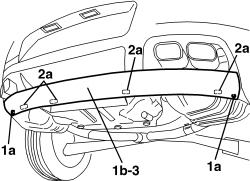

7210E69 R.R. REAR BUMPER LOWER AERODYNAMIC EDGE
- Path
- Procedures > 72 PANELS AND FRAMES > 7210 REMOVING-REFITTING > 7210E EXTERNAL PARTS > 7210E69 R.R. REAR BUMPER LOWER AERODYNAMIC EDGE
- Kind
- repair procedure (removal / refitting; the operation number is the code)
- Applies to
- all engines; all production periods
- Interactive page
- https://sloeber94.github.io/elrnDB-aBrrSpdr/en/#/946002742
Applies to: all engines; all production periods
 Removing
Removing
 Refitting
Refitting- Position the vehicle on a lift.
- Raise the vehicle.
1. Unscrew outer bolts (1a) securing aerodynamic border (1b).
2. Unscrew inner bolts (2a) securing aerodynamic border (1b).
3. Remove the aerodynamic border.

Applies to: all engines; all production periods
Refitting
Removing- Check that the aerodynamic border is not damaged.
- Tighten the aerodynamic border bolts.
- Remove the vehicle from the lift.